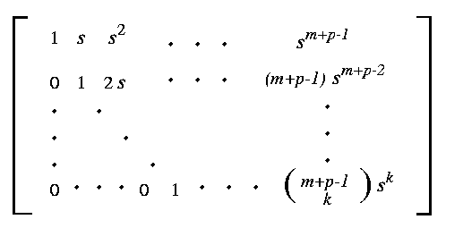

|
 |
Let Xa,b be the set of all p by
(m+p)-matrices
whose entries xi,j satisfy
xi,ai = 1
for i=1, 2, ..., p
xi,j = 0
if j < aj or
j > m + p + 1 -
bp+1-i
If M is a matrix in Xa,b, then the row span of
M is a p-plane in the intersection of
Ya F.(0) and
Yb F.(infinity).
For example, X125, 134 consists of all 3 by 7-matrices
of the form:
| 1 | x1,2 | x1,3 | x1,4 | 0 | 0 | 0 |
| 0 | 1 | x2,3 | x2,4 | x2,5 | 0 | 0 |
| 0 | 0 | 0 | 0 | 1 | x3,6 | x3,7 |